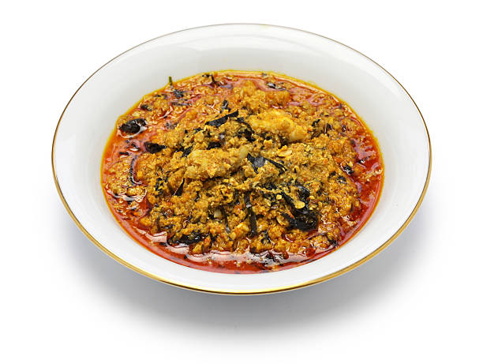

Egusi

Egusi Soup Recipe
Egusi Soup is a finger-licking good Nigerian
soup made with a white variety of pumpkin seeds.
It is spicy, nutty with exotic African flavors!
Egusi soup is also one of the most popular soups,
if not the most popular for all Nigerians and
non-Nigerians that like Nigerian fufu recipes.
The recipe detailed on this page is what
I call the Caking Method of cooking Egusi
Soup (the Egusi Before Oil method).
Egusi Soup Ingredients
- Ground melon
- Smoked turkey
- Salt
- Beef stock cubes
- Pepper
- Palm oil
- Vegetables
Steps
- Add ground melon to a bowl, add about a cup
of water and mix to form a paste then set aside.
Wash and chop the spinach, drain in a
colander and set aside.
- Place a big pan on medium heat, add palm oil
and heat for about 3 minutes (Do not bleach oil)
add the reserved chopped onions and
Sautee till translucent
- Add pepper mix, locust beans and stir to combine.
Bring to boil for 5 minutes.
- Add the egusi paste in bits to pepper,
reduce the heat, do not stir and cover the pot with a lid.
Cook for another 10 minutes.
- Remove the lid, and gently stir the soup.
The egusi would be lumpy at this point, use
the back of a ladle to break the lumps it
into desired size/texture
- Add smoked turkey, ground crayfish and
crayfish, beef stock (if using) and stir
to combine. Add bouillon cubes, taste and
adjust accordingly. I did not add salt to this
soup as the smoked turkey and mackerel already
contained salt. Continue to cook for another
10 minutes, check at intervals and stir to avoid
burning if need be
- Add shredded smoked mackerel and gently
stir into the soup. Add chopped spinach,
stir to combine and cook for another 3 to
5 minutes. Take it off the heat, allow to cool
for about 10 minutes before serving